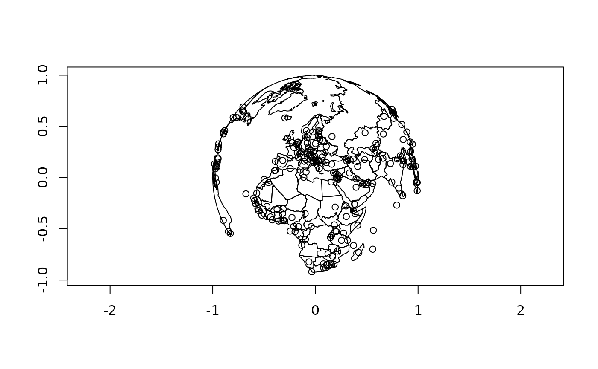

Plot S2 Geographies
Usage
s2_plot(
x,
...,
asp = 1,
xlab = "",
ylab = "",
rule = "evenodd",
add = FALSE,
plot_hemisphere = FALSE,
simplify = TRUE,
centre = NULL
)Arguments
- x
- ...
Passed to plotting functions for features:
graphics::points()for point and multipoint geometries,graphics::lines()for linestring and multilinestring geometries, andgraphics::polypath()for polygon and multipolygon geometries.- asp, xlab, ylab
Passed to
graphics::plot()- rule
The rule to use for filling polygons (see
graphics::polypath())- add
Should a new plot be created, or should
handleablebe added to the existing plot?- plot_hemisphere
Plot the outline of the earth
- simplify
Use
FALSEto skip the simplification step- centre
The longitude/latitude point of the centre of the orthographic projection
Examples
s2_plot(s2_data_countries())
s2_plot(s2_data_cities(), add = TRUE)
